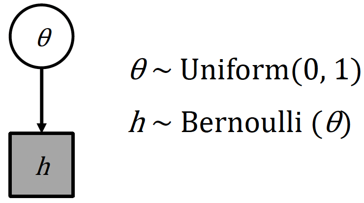
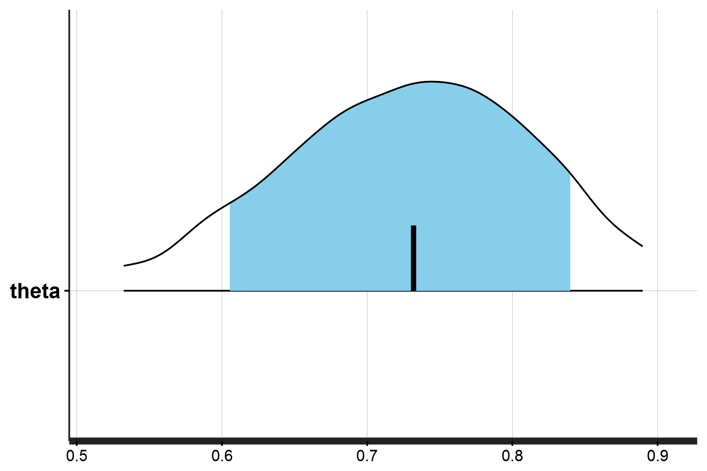
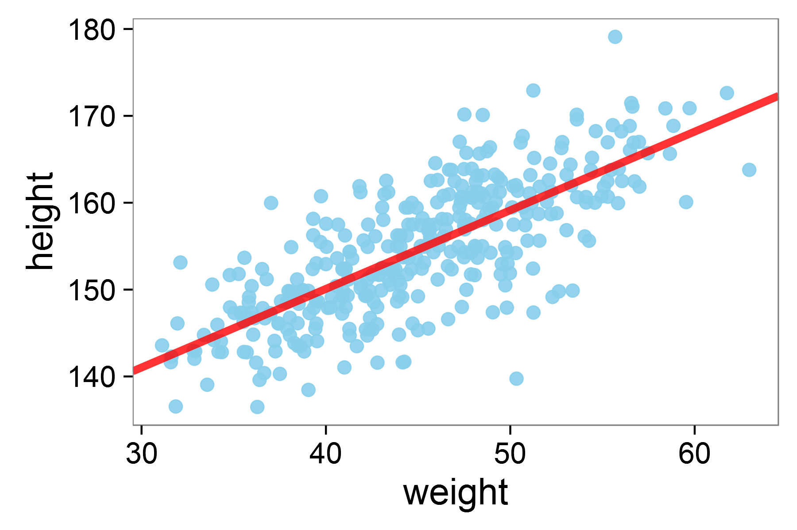
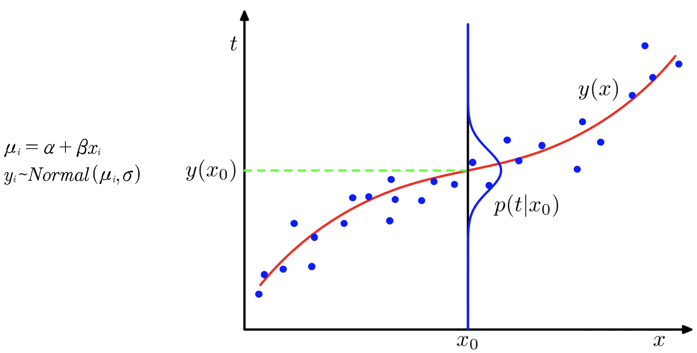
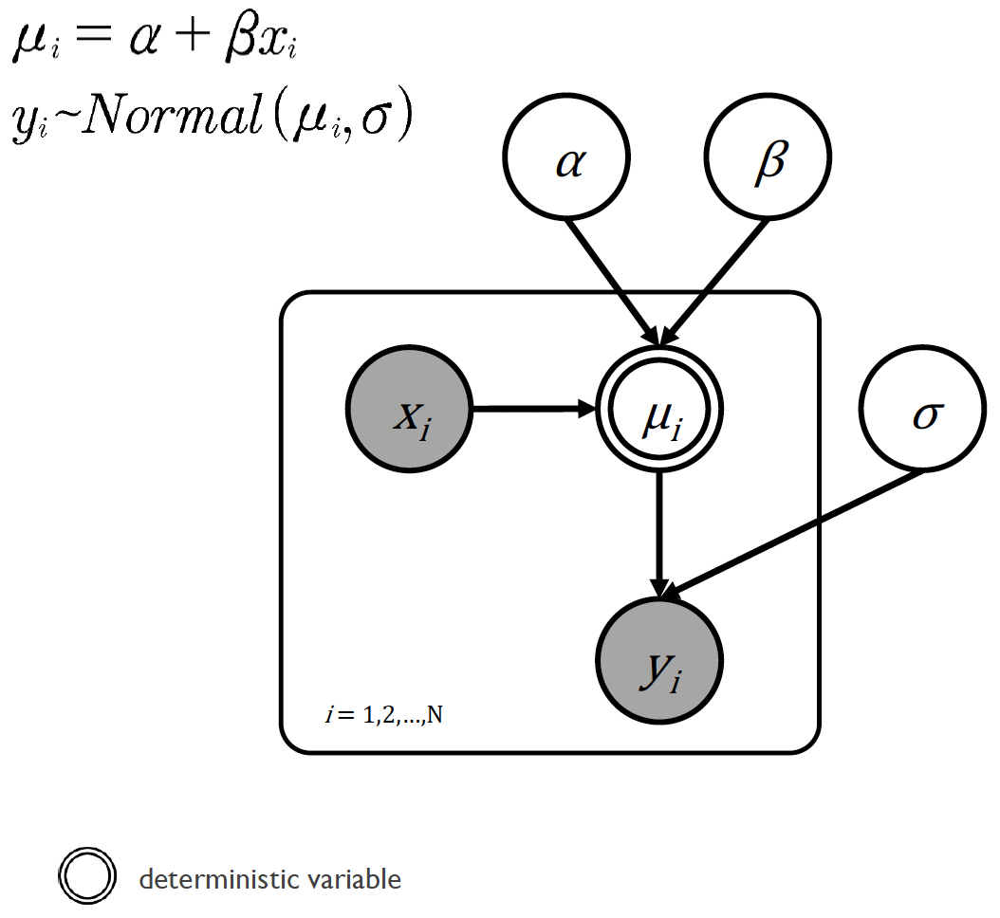
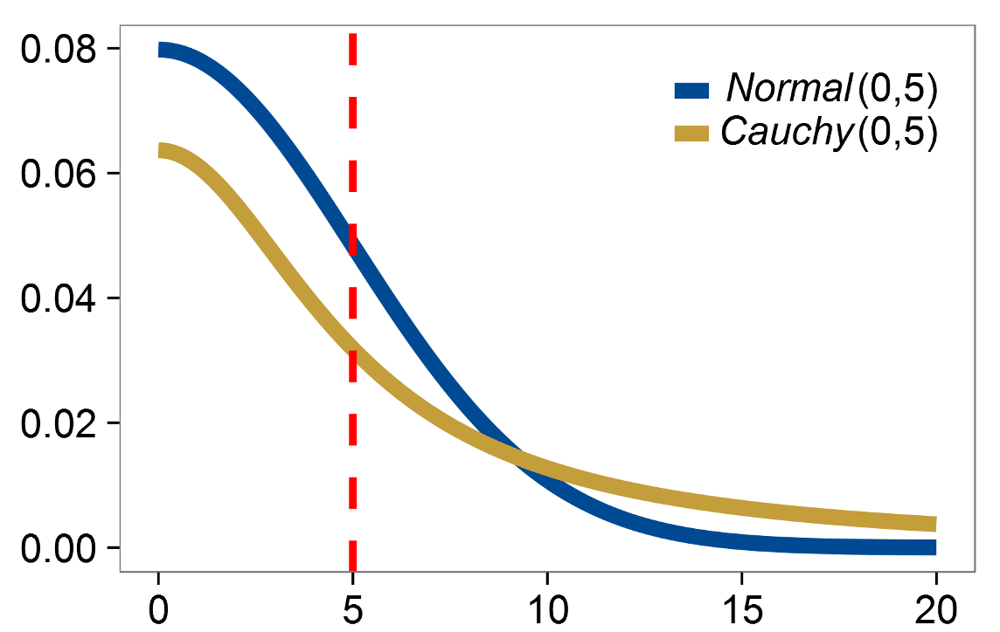
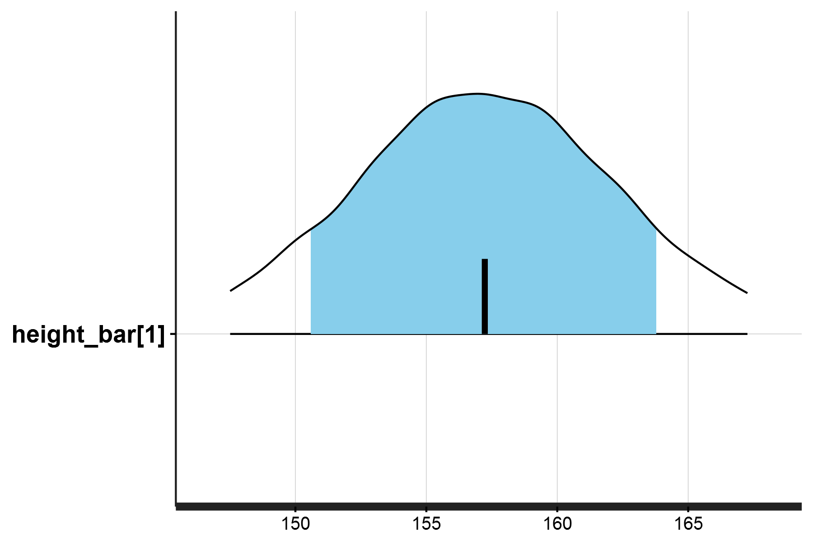
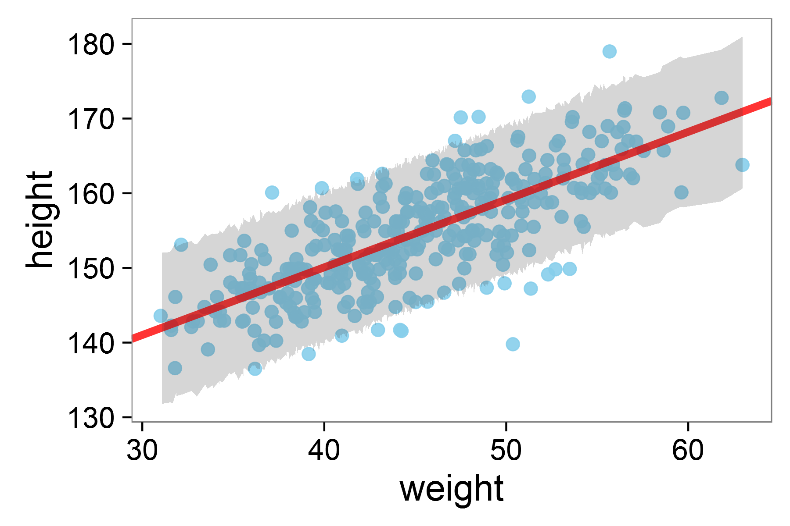

Bernoulli and linear regression models in Stan
Modeling discrete trials and multiple continuous variables
So far we have only constructed a single model in Stan, the binomial model. In this section of the workshop we will construct two more, a Bernoulli model and a linear regression model.
The Bernoulli model
A Bernoulli model is an ideal next step from the binomial model, because they both describe the same underlying process - binary outcomes.
While a binomial model aggregates multiple binary trials into a single count of successes, a Bernoulli model works with individual binary trials directly. Each Bernoulli trial has only two possible outcomes (success or failure, 0 or 1) and is characterized by a single parameter \(θ\), which represents the probability of success.
In fact, a binomial distribution can be thought of as the sum of \(n\) independent Bernoulli trials.
The binomial distribution models the number of successes \(y\) in \(n\) independent trials, where each trial has probability of success \(\theta\). We write this as:
\[ y \sim \text{Binomial}(n, \theta) \]
with probability mass function:
\[ P(y|n,\theta) = \binom{n}{y}\theta^y(1-\theta)^{n-y}, \quad y \in {0,1,...,n} \]
However, the Bernoulli distribution is a special case where we model a single trial (\(n=1\)). We instead write this as:
\[ y \sim \text{Bernoulli}(\theta) \]
with probability mass function:
\[ P(y|\theta) = \theta^y(1-\theta)^{1-y}, \quad y \in {0,1} \]
An alternative definition of the Bernoulli distribution is that it is simply a special case of the binomial distribution where \(n=1\).
For example, if you flip a coin 10 times and count the total number of heads, you’re using a binomial model. However, if you’re recording each flip individually as heads (1) or tails (0), you’re working with Bernoulli trials. The underlying probability parameter \(θ\) remains the same in both cases.
Using the notation we learned earlier1, the Bernoulli model can be depicted as follows:

In this model, we have two parameters: \(θ\) and \(h\).
The parameter \(θ\) is an unobserved continuous parameter that represents the underlying probability of success, and in this example is given a uniform prior distribution between 0 and 1.
The parameter \(h\) is the outcome, an observed discrete variable that can only take values of 0 or 1, and follows a Bernoulli distribution with parameter \(θ\).
The diagram ultimately shows the model structure, where the unobserved \(θ\) influences the observed outcome \(h\) through the Bernoulli distribution.
Fitting the Bernoulli model in Stan
We can now fit fit the Bernoulli model ourselves to some example data. Within the 03.bernoulli_coin/_data folder, there is an example dataset for you to model: flip.RData.
> flip
[1] 1 1 1 0 1 1 1 1 1 0 0 1 1 0 1 1 1 1 0 1The data consists of 20 coin flips stored in the vector flip, where each element is either 0 (tails) or 1 (heads). There are 15 heads (1’s) and 5 tails (0’s). The data is stored as an integer vector, which is appropriate since Bernoulli outcomes must be binary integers.
1. From scratch, try to create a Bernoulli model in Stan for the flip dataset, where we want to estimate the probability of getting heads.
Make sure your model correctly specifies the input data:
- Account for both the sample size and the flip outcomes
- Include appropriate data types and bounds
defines the probability parameter:
- Choose an appropriate variable type and set valid bounds
and links the data to the parameter using the Bernoulli distribution.
2. In a corresponding R script, load in the data flip.RData and correctly assign it to a data list.
We will go through Exercise 6 now, so please do not read ahead if you would like to have a go yourself!
Here is an example Stan model from 03.bernoulli_coin/_scripts/bernoulli_coin_model1.stan:
data {
int<lower=0> N;
int<lower=0,upper=1> flip[N];
}
parameters {
real<lower=0,upper=1> theta;
}
model {
for (n in 1:N) {
flip[n] ~ bernoulli(theta);
}
}Remember that we need three main blocks: data, parameters and model:
data:
- We declare
Nas an integer representing the number of observations - We declares
flipas an array ofNintegers, constrained between 0 and 1
parameters:
- We declare a single parameter,
theta, as a real number thetais constrained between 0 and 1, as it represents a probability
model:
- We use a for loop to iterate through each flip in the data
- Each flip is modeled as a Bernoulli trial with probability
theta
The model assumes each flip is independent and has the same underlying probability of success, theta, which we’re trying to estimate from the data.
Ok, so now we can fit the model:
Firstly, we just need to load in the data and assign it to a data list (the data type that Stan can read):
load('_data/flip.RData')
N <- length(flip)
dataList <- list(flip=flip, N=N)Great! So now we can actually run the model (model1 in scripts/bernoulli_coin_main.R) and print the posterior density distribution of theta. The model output should look like this:
> print(fit_coin1)
Inference for Stan model: anon_model.
4 chains, each with iter=2000; warmup=1000; thin=1;
post-warmup draws per chain=1000, total post-warmup draws=4000.
mean se_mean sd 2.5% 25% 50% 75% 97.5% n_eff Rhat
theta 0.73 0.00 0.09 0.52 0.67 0.73 0.79 0.88 1522 1
lp__ -13.39 0.02 0.68 -15.39 -13.56 -13.13 -12.94 -12.89 1693 1With the posterior density distribution for \(θ\) being:

You may have noticed that there are two Stan models for the Bernoulli example. They are almost identical (and in fact produce the same results), but with a slight difference in how the model block is defined:
Model 1 takes 61 seconds to compile/execute:
model {
for (n in 1:N) {
flip[n] ~ bernoulli(theta);
}
}Whereas Model 2 takes 53 seconds to compile/execute:
model {
flip ~ bernoulli(theta);
}The difference is that the second version takes advantage of vectorization in Stan. This vectorized version is more efficient because it applies the Bernoulli distribution to the entire vector flip at once, rather than processing each element individually through a loop.
Stan is optimized for these vectorized operations - it can process operations on entire vectors or arrays more efficiently than element-by-element operations. Just as sum(x) in R is faster than adding elements in a for loop, Stan’s vectorized operations are computationally more efficient.
Linear regression
Up to this point we have created Stan models involving the binomial and the Bernoulli distribution. In both cases, each of these involves estimating the values of a single unknown parameter \(θ\). We will now do the same for an instance where we will estimate multiple unknown parameters, using a linear regression model.
The code and data for this exercise are located within the /04.regression_height directory, so switch accordingly!
In this instance, we will be following an example provided in McElreath’s Statistical Rethinking2, which aims to model partial census data for the !Kung San tribe from the Dobe region of the Kalahari desert3.
If we look at the data (_data/height.RData) we can see it contains four columns: height, weight, age and male:
height weight age male
1 151.765 47.82561 63 1
2 139.700 36.48581 63 0
3 136.525 31.86484 65 0
4 156.845 53.04191 41 1
5 145.415 41.27687 51 0
6 163.830 62.99259 35 1Linear regression in principle allows us to model the relationship between these variables, such that given any known value for one, we can predict the value of the other.
Running the model on two variables height and weight creates the graph below, which models the relationship between the two:

Linear regression model for height against weight in the !KungSan tribe
The results of this regression demonstrate a significant positive relationship between height and weight, where each unit increase in weight is associated with a 0.91 unit increase in height, with the model explaining about 57% of the variation in height \((R² = 0.57)\):
> summary(L)
Call:
lm(formula = height ~ weight, data = d)
Residuals:
Min 1Q Median 3Q Max
-19.7464 -2.8835 0.0222 3.1424 14.7744
Coefficients:
Estimate Std. Error t value Pr(>|t|)
(Intercept) 113.87939 1.91107 59.59 <2e-16 ***
weight 0.90503 0.04205 21.52 <2e-16 ***
---
Signif. codes: 0 ‘***’ 0.001 ‘**’ 0.01 ‘*’ 0.05 ‘.’ 0.1 ‘ ’ 1
Residual standard error: 5.086 on 350 degrees of freedom
Multiple R-squared: 0.5696, Adjusted R-squared: 0.5684
F-statistic: 463.3 on 1 and 350 DF, p-value: < 2.2e-16But, how can we run this same analysis in a Bayesian approach?
Rethinking the regression model
Running a linear regression in a Bayesian approach requires thinking about what the likelihood function is. Typically, running the regression (as we did above) does not require us to think about this. But the regression model itself is not a likelihood function. We therefore need to determine which statistical distribution underlies the regression model.
In this case, this is the normal (Gaussian) distribution.
Why? Well, in a standard linear regression, we typically model the relationship between variables using two components: a systematic part and a random part. The systematic part is expressed as:
\[\mu_i = \alpha + \beta x_i\]
where:
\(\mu_i\) represents our predicted value,
\(\alpha\) is our intercept,
and \(\beta\) is our slope coefficient.
The random part is then added as an error term:
\[y_i = \mu_i + \epsilon\]
where \(\epsilon\) represents random error, traditionally assumed to be normally distributed with mean \(0\) and some variance \(\sigma^2\):
\[\epsilon \sim Normal(0, \sigma^2)\]
However, rather than separating our model into these two parts, we can directly express our observations \(y_i\) as being drawn from a normal distribution centered at our expected value \(\mu_i\):
\[y_i \sim Normal(\mu_i, \sigma)\]
The image below visually depicts this 4:

Rethinking the linear regression model in a Bayesian context
Conventionally, our regression model generates a prediction for any given value of \(x\): the value of \(y\). This prediction is the red line. However, we can also see that for any given value, there is always some error term. Looking at \(x_0\), the predicted value of \(y(x_0)\) - indicated by the green dashed line - is actually slightly below the observed value (blue dot). This is the case for all values of \(x\), which can be modeled as being normally distirbuted around the true value (this is depicted for \(x_0\)).
This formulation is more natural in a Bayesian context as it directly specifies our likelihood function. It captures our belief that observations should be symmetrically distributed around our expected value \((\mu_i)\), with smaller deviations being more likely than larger ones. The parameter \(\sigma\) then represents our uncertainty about how far observations typically deviate from this expected value.
This is mathematically equivalent to the traditional approach, but aligns with Bayesian inference.
To better understand the relationships between the different variables in our Bayesian approach to linear regression, we can plot this as a directed acrylic graph:

The linear regression model in graphical notation
In this diagram we can see that:
All of the variables are continuous, and that the data \(x_i\) and \(y_i\) are known.
The slope \(\alpha\) and intercept \(\beta\) together with the known value of \(x_i\) generate the predicted value for the other data \(\mu_i\)
However, the true value of the other data \(y_i\) is normally distributed around \(\mu_i\) with a standard deviation \(\sigma\)
The double circle around \(\mu_i\) means that it is a deterministic variable, i.e., completely determined by other variables. Specifically, \(\mu_i\) is determined by the equation \(\mu_i = \alpha + \beta x_i\), meaning once we know the values of \(\alpha\), \(\beta\), and \(x_i\), there’s no uncertainty about what \(\mu_i\) will be.
Building a linear regression model in Stan
How would we go about writing a linear regression model in Stan?
Let’s first describe the model block. It makes sense at first to write something like this:
model {
vector[N] mu;
for (i in 1:N) {
mu[i] = alpha + beta * weight[i];
height[i] ~ normal(mu[i], sigma);
}
}In this case, we’re translating the diagram directly into code. For each observation \(i\):
- We calculate the expected height
mu[i]using our linear equationalpha + beta * weight[i] - We then model the actual height as being normally distributed around this expected value
While this is perfectly valid, we can make it more efficient. Remember that because Stan allows us to perform calculations on entire vectors at once (vectorization), we can get rid of the for loop:
model {
vector[N] mu;
mu = alpha + beta * weight;
height ~ normal(mu, sigma);
}This second version does exactly the same thing, but instead of calculating each mu[i] separately, it does all calculations at once, and is therefore more computationally efficient.
We can take this one step further. Since mu is just an intermediate calculation, we can insert it directly into our normal distribution:
model {
height ~ normal(alpha + beta * weight, sigma);
}This final version is the most elegant - it directly expresses that our heights are normally distributed around alpha + beta * weight.
Whilst the third version is certainly the most elegant, whether it is ‘better’ than the second version is debatable. Ultimately, whether you write your model code as in the second or third example depends on your proficiency and confidence with Stan. Sometimes having more detail and knowing exactly which calculations were performed in the code can be useful!
As we are implementing a Bayesian approach, we need to provide priors for our model.
What priors do we set? Which distributions should we use?
For our intercept \(\alpha\) and slope \(\beta\), we use normal distributions.
\[\alpha \sim Normal(170, 100)\]
\[\beta \sim Normal(0, 20)\]
Since \(\alpha\) represents the expected height when weight is zero, we center it around 170 (a reasonable height in cm) with a large standard deviation of 100 to keep it weakly informative. For the slope, we center around 0 with standard deviation 20, allowing for both positive and negative relationships between height and weight.
For the standard deviation (\(\sigma\)) prior, we use a half-Cauchy distribution:
\[\sigma \sim halfCauchy(0, 20)\]
The half-Cauchy is a distribution particularly suitable for standard deviation parameters because of it’s properties. Looking at the graph below, you can see how it differs from a normal distribution - it has “fatter tails”, meaning it assigns more probability to larger values.

The normal and half-Cauchy distributions plotted for positive values of \(x\)
Where \(x = 5\), notice how the area under the Cauchy curve extends further into the tails compared to the normal distribution. This makes the half-Cauchy weakly informative by places reasonable probability on moderate standard deviations while still allowing for larger ones if the data supports them.
Let’s now create our specific model to run in Stan:
We will firstly want to load in the data into our data block. Remember that we have three variables:
Nas the number of observations,heightandweightas vectors of lengthN.
We should also ensure that these measurements can’t be negative. So our data block will look like this:
data {
int<lower=0> N;
vector<lower=0>[N] height;
vector<lower=0>[N] weight;
}In the parameters block, we should define the parameters we want Stan to estimate. We have three parameters:
alpha(intercept) andbeta(slope) are declared asreal(continuous) numbers without constraintssigma(standard deviation) is also arealnumber, but should be constrained to be positive
Our parameters block will therefore be:
parameters {
real alpha;
real beta;
real<lower=0> sigma;
}The model block contains two key components both of which we have discussed above. This consists:
- Our prior distributions for our parameters, using the distributions we discussed earlier
- The likelihood function, which specifies our linear regression model
model {
# set priors
alpha ~ normal(170, 100);
beta ~ normal(0, 20);
sigma ~ cauchy(0, 20);
# likelihood function
height ~ normal(alpha + beta * weight, sigma);
}In addition to this, we might also want to run a posterior predictive check. We will learn more about posterior predictive checks in future workshops, but for now it is simply enough to know that posterior predictive checks helps us assess how well our model captures the patterns in our data by generating new data from our fitted model and comparing it to our actual observations.
In our Stan model, we can add a posterior predictive check by adding a generated quantities block:
generated quantities {
vector[N] height_bar;
for (n in 1:N) {
height_bar[n] = normal_rng(alpha + beta * weight[n], sigma);
}
}The generated quantities block is executed after Stan has finished sampling and is used for computing additional quantities of interest from the posterior samples. It can be used for tasks like posterior predictive checks, calculating derived parameters, or computing prediction intervals.
In this case, the block generates new height values (height_bar) for each weight in our dataset. For each observation, it draws a random value from a normal distribution using our estimated parameters \(\alpha\), \(\beta\), and \(\sigma\). These simulated values represent what our model thinks the data should look like given our parameter estimates.
1. Run the linear regression model and plot the posterior density for a single generated value and the posterior predictive check for the provided data.
The R script for you to run the linear regression model is regression_height_ppc_main.R which runs the Stan model regression_height_ppc_model.stan.
The posterior density for a single value, and posterior predictive check should look like this:

This plot specifically shows the posterior predictive distribution for a single predicted height value height_bar[1], which corresponds to the first weight observation in the dataset (47.8 kg).
Now let’s plot our regression model itself:

The full regression model fit with 95% HDI shaded
In the plot above, the red line shows our model’s predicted relationship between height and weight. The grey shaded area represents the Highest Density Interval (HDI), the region where we expect most of our observations - in this case 95% - to fall according to our model.
The HDI (which could be 80%, 89%, 90%, or 95% as shown) represents the range containing that percentage of the predicted values. This helps us assess whether our model’s predictions align well with our observed data and gives us a sense of our prediction uncertainty.
Footnotes
Lee, M. D., & Wagenmakers, E. J. (2014). Bayesian cognitive modeling: A practical course. Cambridge university press.↩︎
McElreath, R. (2020). Statistical Rethinking: A Bayesian Course with Examples in R and Stan, 2nd Ed. CRC Press.↩︎
Howell, N. (2010). Life Histories of the Dobe !Kung: Food, Fatness, and Well-being over the Life-span. Origins of Human Behavior and Culture. University of California Press.↩︎
Bishop, C. M., & Nasrabadi, N. M. (2006). Pattern recognition and machine learning (Vol. 4, No. 4, p. 738). New York: Springer.↩︎